ICOMS – Backlog – Open DI
-
Open account, review the customer comments for disconnect request.
Example 1
Example 2
-
Review work orders to determine what type of disconnect is taking place. Also use “View 2” on the left to review the original start bill date or future bill date. The “start billing date” is important and is used to backdate properly.
- --If the order is future scheduled, choose “Future Billed” in TAARMS, Choose the date the order is scheduled for and type into the notes “FB for mm/dd”.
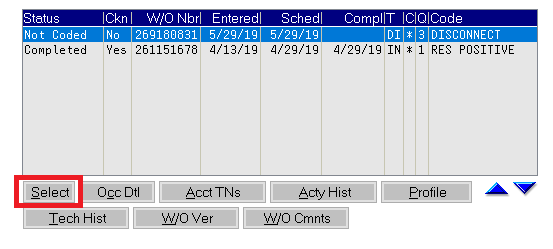
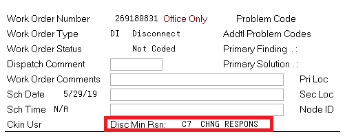
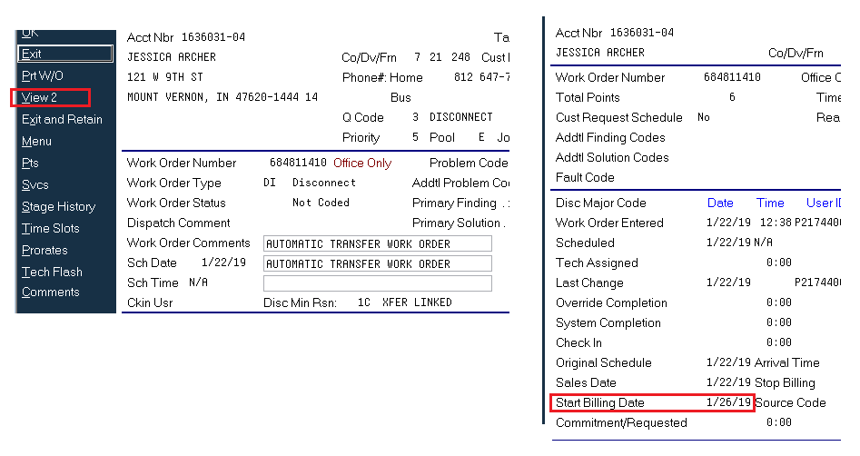
-
If the work order is for a transfer, ICOMS will allow toggling between the linked accounts. This can be helpful to ensure the new account is installed, to see if equipment is moved and to determine the install date in case any backdate adjustments are needed on the from accounts disconnect order.
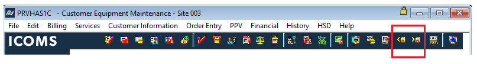
- Review if there are any pending PWS tasks. To check for PWS errors, highlight the pending disconnect W/O and click the “profile button”.
- PWS tasks are phone related changes submitted to OMSE from the ICOMS order. Only until these requested changes complete within OMSE will these tasks be completed on ICOMS order, allowing the order to be completed. In some cases agents are able to utilize OMSE to check for a pending “PRV” order and try completing it.
- If the customer does not have phone service, there will be no PWS errors.
- Presently, if a PWS error cannot be cleared by the agent, submit a UCM ticket, notate the account, and escalate the issue within TAARMS and choose the reason “PAC UCM”.
- Example of a work order without any pending PWS errors. If the order has a PWS error, the provisioning line item (boxed below in red) will be "Active" instead of complete.
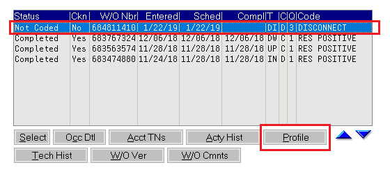
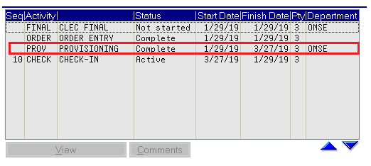
- If there are PWS errors, there may be an open provisioning order in OMSE that just might need to be provisioned. If there are any stuck/pending DPO’s from previous orders, these can prevent any newer DPO from dropping “Child” orders, which include the “PRV (provisioning order)” that is required to be completed.
- Example of OMSE showing a DPO that just had the PRV completed, which cleared the work orders PWS task.
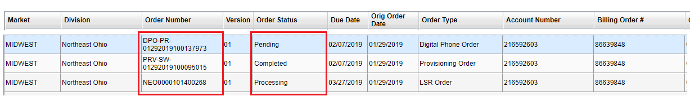
- If there’s a previous DPO preventing the DPO generated by the disconnect order from dropping “child orders”, a UCM ticket will be need to be submitted for PAC to resolve. Create the PAC UCM, notate the UCM ticket number in the TARRMS task.
- If there are other issues found within OMSE, such as the PRV going invalid when attempting to provision the order, a UCM may also be needed.
-
If there are no PWS tasks pending, or if the agent was able to complete the PWS task. Copy the W/O number from ICOMS
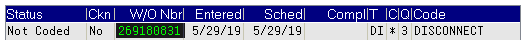
-
Open a 2nd ICOMS and navigate to the “Work Order Check-In” section within the “Dispatch” menu.
- --To get to the “Work Order Check-In” section within ICOMS, starting at the “Master Menu in ICOMS, choose:
26. Operations Personnel Menus -> 2. Dispatch Menu -> 24. Work Order Check In
-
Ensure that the option “Check In by W/O” is selected, then enter the W/O number and hit enter. This brings up the 42 screen of the W/O
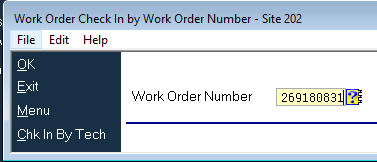
-
Select “Completed”, type your tech ID into the “Installer” field, enter “CP” into the “Solution Code” field and ensure that the “Start Bill Date” is correct. Once this is all filled out, hit enter and the W/O should complete.
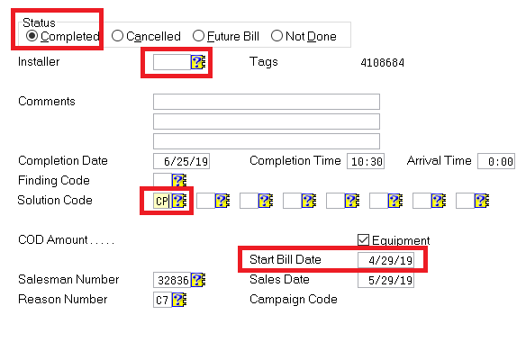
- Once completed, the account will go to former status. Check the ledger on the 57 screen, and ensure the customer’s bill was backdated to the start bill date entered on the disconnect W/O.
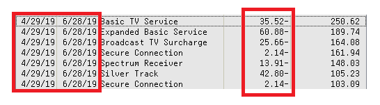
- While looking at the ledger, if the backdate applied a credit to bucket 1 and left balances in any other buckets, re-age those balances to bucket 1 to apply the remaining credit to their balance.
- Once the order is completed, notate the account with “COMPLIANCE BACKLOG: COMPLETE PENDING DISCO”